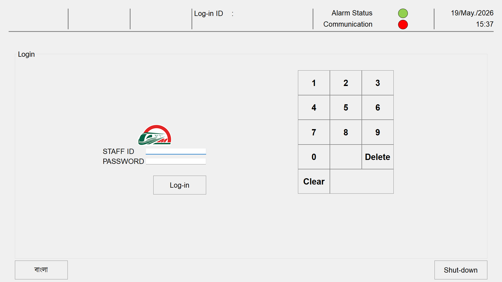
QT C++ · Desktop
01
Embedded / Desktop
Dhaka MRT Ticket Office Machine (TOM)
QT C++ desktop fare collection software powering Dhaka Metro Rail MRT Line-6 AFC. Handles Felica IC card transactions, SAM security modules, and real-time reporting.
QT C++SQLiteFelica NFCSAMRabbitMQ
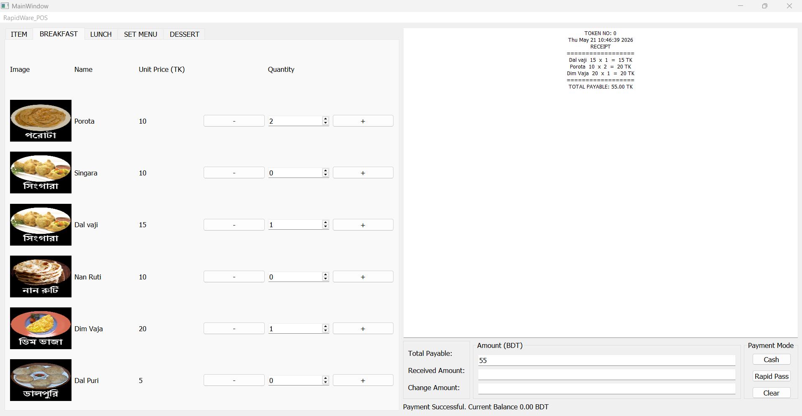
QT C++ · Desktop
02
Desktop
Desktop Restaurant Management System (POS)
Desktop applications for Restaurant Management using QT C++ with Sony Felica IC Card and SAM module integration for secure access control.
QT C++Felica NFCSAMSQLite
03
Linux Device
NEXGO G25 POS — AFC Linux App
Linux-based C application for the NEXGO G25 POS terminal enabling fare collection for public bus and water taxi operators under the Dhaka Bus Route Rationalization project.
CEmbedded LinuxTCP SocketMySQLFelica NFC
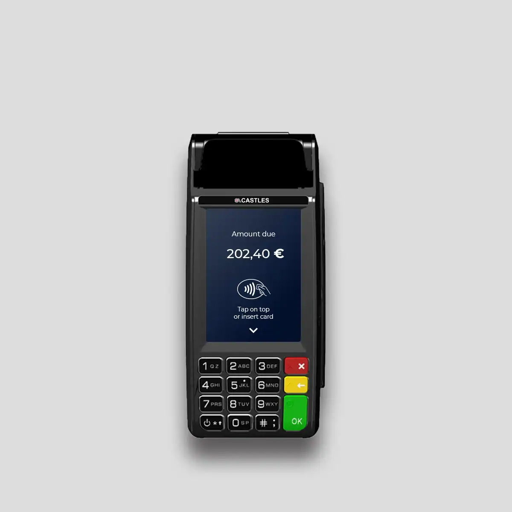
Castles Vega 3000
04
Linux Device
Caste Handy Vega — BRTC AFC App
Linux application for Caste Handy Vega Series 300 deployed for BRTC operators under the JICA Clearing House project, handling Felica card taps and fare settlement.
CLinuxSAMTCP SocketMySQL
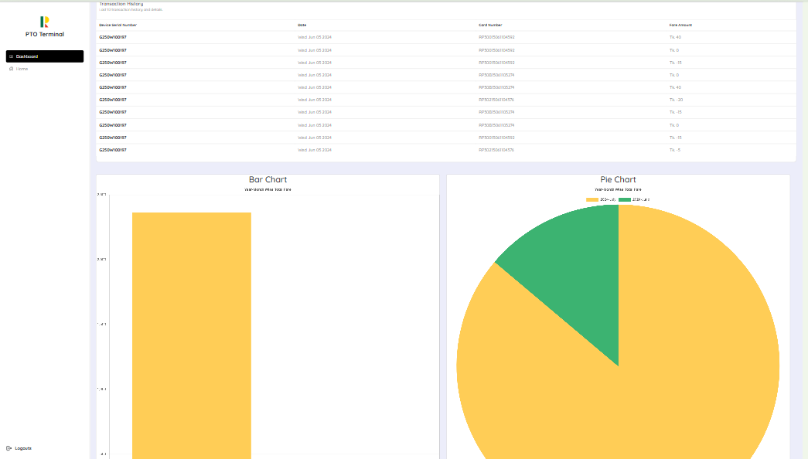
Web Dashboard
05
Web / React
Transport Operator Monitoring Terminal
Real-time web dashboard for monitoring public transport operators across Dhaka. Live data feeds, operator analytics, and server-side reporting built on Next JS + Node JS.
React JSNext JSNode JSExpress JSMySQL
06
Android / R&D
Rapid Pass Online Top-Up System
R&D enabling online recharge of Rapid Pass & MRT cards via Nexgo G25 and Sunmi P2 Android devices, integrated with payment gateway and Laravel backend.
Java AndroidFelica NFCSAMLaravelMySQL
07
Android / R&D
QR Code E-Ticket Android App
R&D Android app replacing Single Journey Tickets with QR code-based e-tickets, integrated with online payment system for seamless MRT commuter experience.
Java AndroidQR CodePayment APIREST
08
Android
Felica Card Balance & History App
Android application for Rapid Pass card balance checking and transaction history using Android NFC Manager and Sony Felica IC card technology on Sunmi devices.
Java AndroidNFC ManagerFelica IC
09
API / Laravel
DBBL Clearing House Settlement API
Secure settlement API connecting Clearing House Bank (DBBL) to the JICA Clearing House System for multi-operator fare reconciliation with JWT authentication.
PHPJWTMySQLLinux VPS
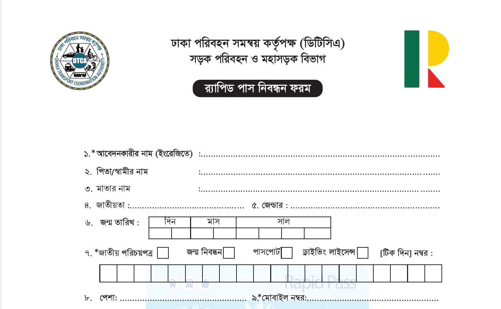
CodeIgniter Web App
10
Web / CodeIgniter
Rapid Pass Registration Website
Public-facing website for Rapid Pass card registration with full API integration to the Clearing House Server, SFTP connections, and VPS management.
CodeIgniterMySQLBootstrapSFTP
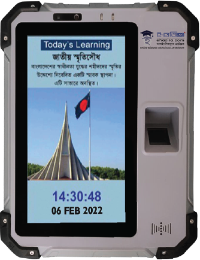
IoT · Laravel · Livewire
11
Web / IoT
e-Hazira Attendance Platform
IoT-integrated attendance system with Android device API, real-time tracking, and Laravel + Livewire admin portal for Copotronic Infosystems.
LaravelLivewireIoT APIMySQL
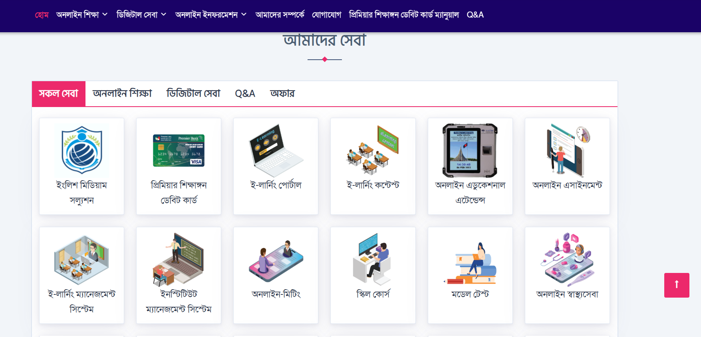
Laravel · Bootstrap
12
Web / Laravel
Shikkhangon Platform
One stop digital solution for educational portal of Copotronic Infosystems.
LaravelBootstrapMySQLjQueryAjax
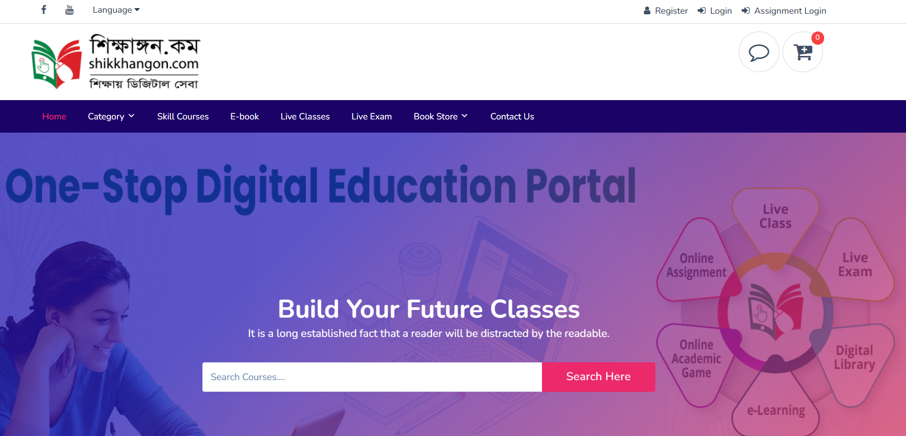
CodeIgniter · Bootstrap
13
Web / CodeIgniter
e-Learnning Platform
One stop digital solution for educational portal of Copotronic Infosystems.
CodeIgniterBootstrapMySQLjQueryAjax
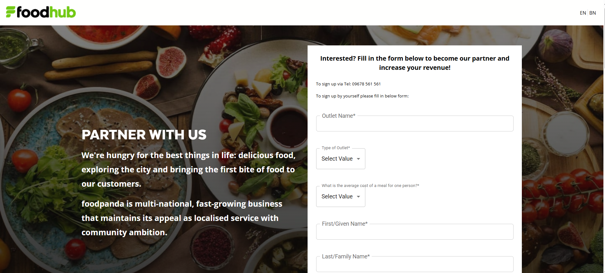
React · Material-UI
14
Web / React
FoodHub Restaurant Panel
SPA restaurant management panel with real-time order management, built with React and Material-UI for Bitspeck Solutions.
React JSMaterial-UIREST API
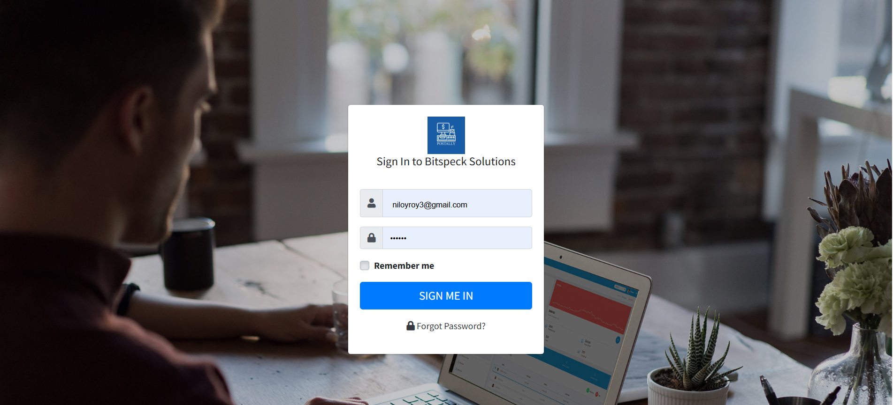
Web/ Laravel
15
Web Software
Inventory Management System (Postally)
This project developed for managing inventory for Postally.
LaravelBootstrapMySQLjQueryAjax
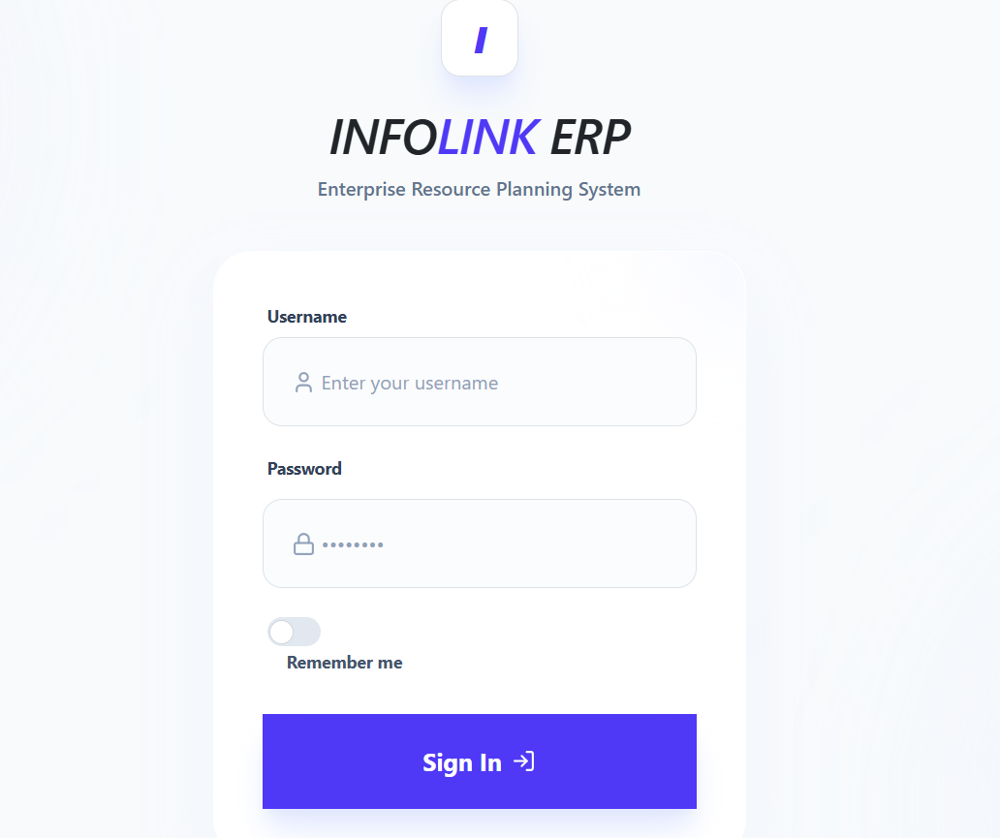
Web/ Laravel
16
Web Software
Infolink Limited (ERP)
This project developed for managing enterprise resources for Infolink Limited.
LaravelBootstrapMySQLjQueryAjax
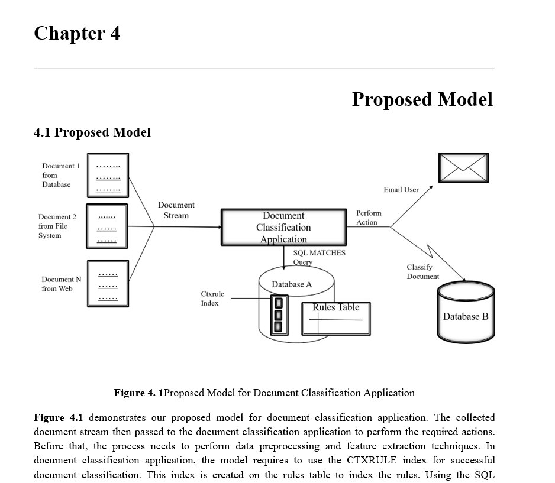
Python · ML
17
Machine Learning
Multi-label Document Classification
Python ML pipeline for multi-label document classification using Oracle Machine Learning, PL/SQL, Pandas, NumPy, and Scikit-learn via Kaggle Notebook.
PythonScikit-learnOracle MLPL/SQLPandas
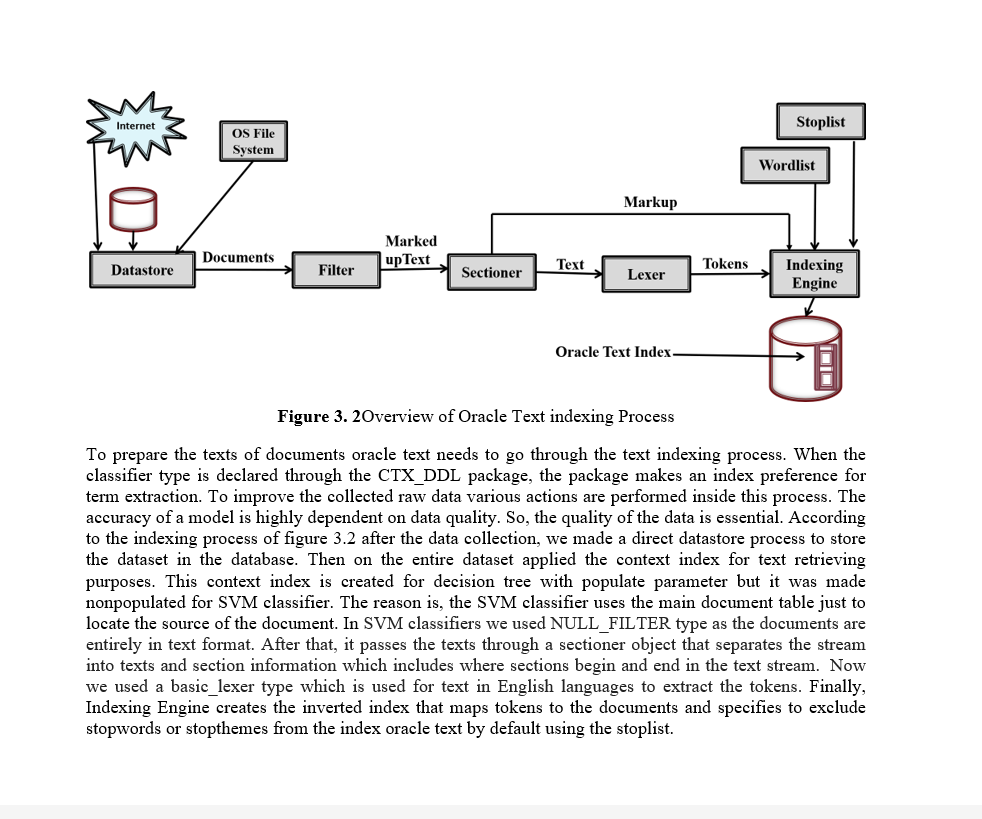
NLP · Scikit-learn
18
Machine Learning
Sentiment Analysis — Drug Reviews
NLP-based sentiment analysis on a drug review dataset using Python with Pandas, NumPy, Scikit-learn, and Matplotlib for data visualization.
PythonNLPPandasScikit-learn